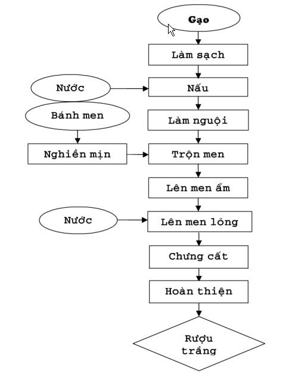
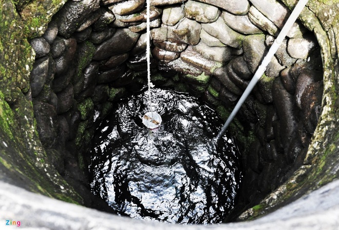
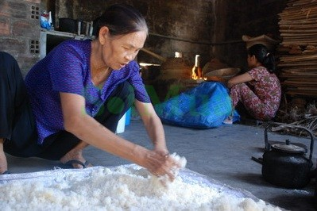
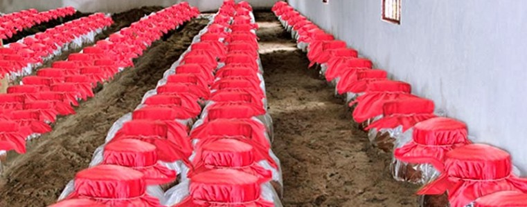
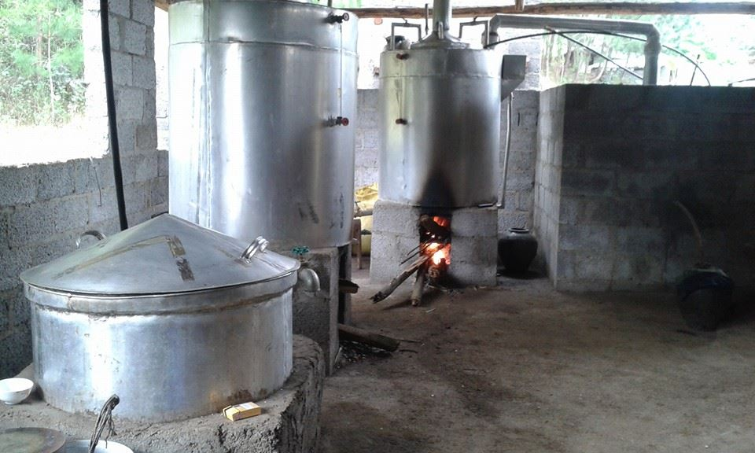

QUY TRÌNH SẢN XUẤT RƯỢU BẦU ĐÁ

Sơ đồ quy trình nấu rượu gạo bầu đá
* Chú ý: Để sản xuất ra loại rựu đặc sản này, người ta cần gạo lúa thơm, men rượu ngon và mạch nước ngầm từ làng Bàu Đá mà không nơi nào có được. Nhiều người trong làng mang bí quyết làm rượu đi vùng khác làm nhưng không được ngon do không có nguồn nước giống làng Bầu Đá

Rượu được nấu từ nước giếng làng Bầu Đá
1.Chọn gạo để làm rượu
Rượu Bầu đá được lên men hoàn toàn từ gạo nếp ngon. Gạo nếp được dùng làm rượu vẫn còn nguyên lớp vỏ lụa và lớp cám nên rất giàu chất dinh dưỡng, đặc biệt là protein, lipid, các nguyên tố vi lượng và vitamin (nhất là vitamin B1). Ngoài tác dụng bồi bổ cơ thể, rượu nếp còn giúp ăn ngon miệng, kích thích tiêu hóa.
1.Chọn men để làm rượu
Men sử dụng làm rượu nếp cũng được làm từ nhiều loại thảo dược có đặc tính cay, nóng. Về cơ bản men rượu là một hỗn hợp gồm các vi sinh vật có khả năng thủy phân tinh bột thành đường và lên men dịch đường thành rượu. Với mỗi địa phương, lại có một bí quyết riêng để chế biến và sử dụng men rượu khác nhau để tạo ra rượu nếp ngon của riêng mình.
3. Cách chế biến.
Để cho ra được những giọt rượu nếp thơm ngon quả thực không hề đơn giản chút nào, nó đòi hòi phải có sự công phu và chau chuốt. Gạo nếp sau khi được nấu chín, làm nguội thì rắc bột men và đem đi ủ. Trong quá trính ủ nấm mốc phát triển trên cơm gạo nếp và tự tạo cho khối gạo ủ mùi thơm đặc trưng, hấp dẫn. Đặc biệt để có được rượu nếp ngon và vẫn giữ được hương thơm, khi chưng cất không sử dụng tháp cao cất cồn mà dùng thiết bị chưng cất rượu để thu hoạch, lúc này rượu nếp đạt khoảng 40-50 độ rượu. Chất lượng rượu ngon hay không còn phụ thuộc vào điều kiện thời tiết, đòi hòi người làm rượu phải biết đánh giá tình hình thời tiết trong suốt quá trình chế biến rượu nếp.
Giai đoạn nấu cơm
– Khi đã chọn được loại gạo ngon để nấu rượu chúng ta cho gạo vào ngâm nước lạnh khoảng 4-6h sau đó cho nào nồi đồ như đồ xôi.
– Khi cơm chín bới cơm ra nong, điều quan trọng các bạn lưu ý là phải trải đều cơm ra mặt long tránh để dồn cục vì như thế khi rắc men sẽ không được đều chỗ có chỗ không. may san xuat da vien Sau khi dỡ cơm xong chúng ta đợi vài phút cho tới khi sờ tay thấy cơm còn ấm ấm là tiến hành rắc men.
Giai đoạn chuẩn bị men rượu
Trong món cơm rượu không thể thiếu men vì men chính là chất xúc tác giúp cơm có thể dậy men để tạo ra mùi thơm và vị ngọt cho cơm.
– Khi chọn men làm cơm hay làm rượu các bạn tuyệt đối không sử dụng men tàu vì khi ăn (uống) sẽ dẫn đến tình trạng nhức đầu, ngộ độc… chúng ta chọn mua loại men gạo được người ta làm thủ công từ bột gạo cộng với nhiều vị thuốc bắc (Men dạng cục màu trắng tròn to bằng miệng cốc, hơi phồng lên như cái bánh giày), men cũng rẻ thôi nếu làm 5kg gạo các bạn chỉ mua 3-4k men là thoải mái, nếu quen nhà ai nấu rượu thị xin cũng được.
– Liều lượng men: thường là 1 lạng men / 10kg gạo, như vậy nếu các bạn nấu 5kg gạo thì chỉ cho 1/2 lạng men là vừa.
– Sau khi cân đủ lượng men các bạn cho vào cối dã men thành bột mịn càng nhỏ càng tốt, nếu có máy xay sinh tố thì cho men vào quay một lúc là nhanh nhất.
Giai đoạn rắc men

Các bạn lưu ý trước khi rắc men phải kiểm tra cơm còn nóng không nếu rắc men khi cơm còn nóng thì sẽ làm men bị chết, còn nếu rắc khi cơm quá nguội thì men cũng không ăn được cơm sẽ làm hỏng cơm. Nên tốt nhất là rắc khi cơm còn ấm tay.
Các bạn chia men thành 2 phần một phần rắc đều mặt trước đảm bảo men phủ kín bề mặt cơm, sau đó lật mặt dưới lên rắc nốt nửa men còn lại. Do cơm nếp rất dính nếu các bạn trộn thì men chắc chắn sẽ không đều bằng cách mình nói trên.
Giai đoạn ủ cơm

– Sau khi rắc men xong các bạn cho cơm vào chum hay vào hũ bằng đất lung hay thủy tinh để ủ cơm nhưng chỉ cho đầy khoảng 2/3 dung tích hũ, đậy kín. Sau 3-4 ngày hũ cơm rượu sẽ tự dậy nước và mùi thơm rượu.
– Các bạn lưu ý khi ủ cơm phải đảm bảo giữ ấm cho hũ cơm vào mùa đông. Tùy thời tiết, trời càng nóng cơm rượu càng mau được. Ở vùng cao, nhiệt độ thấp người ta thường để hũ cơm rượu gần bếp để ủ nóng. Cơm rượu sẽ đạt đến nồng độ rượu cao nhất trong một ngày nhất định vào khoảng ngày thứ năm hay thứ sáu, tùy chất lượng men.
Giai đoạn chưng cất rượu

– Ủ rượu khoảng 1 tuần khi ấy cơm nếp đã lên men và sẽ ra nước cốt, chúng ta múc cả cốt cả cái cho vào nồi và tiến hành trưng cất rượu.
– Nồi dùng để nấu rượu thường làm bằng đồng hoặc đất nung là tốt nhất, trưng cất bằng các chất liệu khác rượu sẽ không ngon hoặc có mùi lạ rất khó uống.
– Khi nấu chúng ta lưu ý nồi rượu sôi rồi thì phải giảm bếp cho nhỏ lửa đi để rượu chảy ra từ từ, nếu đun bếp quá to sẽ làm phì rượu khi uống sẽ có mùi khét rất khó uống.
– Nếu bạn ăn cơm rượu nếp thì chỉ để đến khi men ngấu, mặt cơm hơi ướt bóng lên là ăn được (tầm 3 ngày). Nếu làm nhiều thì tốt nhất là cho vào tủ lạnh để ăn dần. Cơm rượu trộn với sữa chua không còn gì tuyệt hơn, tốt cho tiêu hóa, đẹp da, bổ máu. Người suy nhược do hậu sản cách ngày ăn một lòng đỏ trứng đánh với cốt rượu, tốt hơn thang thuốc.